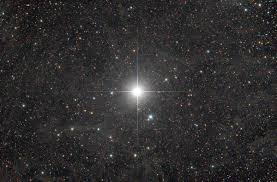

<!DOCTYPE html>
<html lang="en">
<head>
  <meta charset="utf-8">
  <meta name="viewport" content="width=device-width, initial-scale=1.0">
  <title>Digital Stars - Milky Way</title>

  <link rel="stylesheet" href="../dist/photo-sphere-viewer.css">

  <link rel="stylesheet" href="https://maxcdn.bootstrapcdn.com/bootstrap/4.0.0/css/bootstrap.min.css"
        integrity="sha384-Gn5384xqQ1aoWXA+058RXPxPg6fy4IWvTNh0E263XmFcJlSAwiGgFAW/dAiS6JXm" crossorigin="anonymous">

  <style>
    html, body {
      width: 100%;
      height: 100%;
      overflow: hidden;
      margin: 0;
      padding: 0;
    }

    #photosphere {
      width: 100%;
      height: 100%;
    }

    .psv-button.custom-button {
      font-size: 22px;
      line-height: 20px;
    }

    .demo-label {
      color: white;
      font-size: 20px;
      font-family: Helvetica, sans-serif;
      text-align: center;
      padding: 5px;
      border: 1px solid white;
      background: rgba(0, 0, 0, 0.4);
    }
  </style>
</head>
<body>

<div id="photosphere"></div>

<script src="../node_modules/three/build/three.js"></script>
<script src="../node_modules/promise-polyfill/dist/polyfill.js"></script>
<script src="../node_modules/uevent/browser.js"></script>
<script src="../node_modules/nosleep.js/dist/NoSleep.js"></script>
<script src="../node_modules/three/examples/js/controls/DeviceOrientationControls.js"></script>
<script src="../node_modules/three/examples/js/effects/StereoEffect.js"></script>
<script src="../dist/photo-sphere-viewer.js"></script>

<!-- text used for the marker description -->
<script type="text/template" id="pin_galaxia1">
  <h1>Orion's Belt</h1>

  <p>Orion's Belt or the Belt of Orion, also known as the Three Kings or Three Sisters,[1] is an asterism in the
    constellation Orion. It consists of the three bright stars Alnitak, Alnilam and Mintaka.
  </p>
  <p>Looking for Orion's Belt in the night sky is the easiest way to locate Orion in the sky. The stars are more or less
    evenly spaced in a straight line, and so can be visualized as the belt of the hunter's clothing. They are best
    visible in the early night sky during the Northern Winter/Southern Summer, in particular the month of January at
    around 9:00 pm.
  </p>

  
  <br>
  <br>
  <a href="esfera2.html" class="btn btn-primary">Go to Orion's Belt</a>
  <br>
  <br>

</script>

<script type="text/template" id="pin_item1">
  <h1>Alpha Centauri</h1>

  <p>Alpha Centauri is the closest star system and closest planetary system to the Solar System at 4.37 light-years from
    the Sun. It is a triple star system, consisting of three stars: a Centauri A (officially Rigil Kentaurus), a
    Centauri B (officially Toliman), and a Centauri C (officially Proxima Centauri).</p>


  
  <br>
  <br>
  <a href="alphacentauri.html" class="btn btn-primary">View More</a>
  <br>
  <br>


</script>

<script type="text/template" id="pin_item2">
  <h1>Pleiades</h1>
  <p>
    The Pleiades (Messier 45), popularly known as seven-star and seven-kid, are a group of stars in the constellation
    Taurus. The Pleiades, also called the M45 star cluster (or open cluster), are easily visible to the naked eye in
    both hemispheres and consist of several bright, warm stars with a predominantly blue spectrum. The Pleiades have
    various meanings in different cultures and traditions. The cluster is dominated by warm blue stars that formed in
    the last 100 million years. There is a reflection nebula formed by dust around the brightest stars that were
    originally believed to have been formed by the remnants of the cluster formation (hence the alternative name of
    Mayan Nebula of the Mayan star), but, it is now known to be a cloud of dust unrelated to the interstellar cluster
    that the stars are currently traversing. Astronomers estimate that the cluster will survive for another 250 million
    years, after which it will be dispersed due to gravitational interactions with the galactic neighborhood. It is an
    excellent object for viewing from the simplest binoculars to the largest telescopes, showing over 100 stars in an
    apparent diameter of about 72 minutes of arc. Contains numerous double or multiple stars. The Merope Nebula around
    the Star Merope can be seen with 4-inch aperture amateur telescopes in a superb night sky. They are situated near
    the ecliptic and lunar occultations are frequent. Conjunctions with Mercury, Mars, and Venus also occur, but less
    often.
  </p>

  
  <br>
  <br>
  <a href="pleiades.html" class="btn btn-primary">View More</a>
  <br>
  <br>

</script>

<script type="text/template" id="pin_item3">
  <h1>Pole Star</h1>

  <p>A pole star or polar star is a star, preferably bright, closely aligned to the axis of rotation of an astronomical
    object.</p>

  <p>Currently, Earth's pole stars are Polaris (Alpha Ursae Minoris), a magnitude 2 star aligned approximately with its
    northern axis, and a pre-eminent star in celestial navigation, and Polaris Australis (Sigma Octantis), a much dimmer
    star. A couple thousand years ago, Kochab and Pherkad were twin northern pole stars, though neither was as close to
    the pole as Polaris is now.</p>

  
  <br>
  <br>
  <a href="polestar.html" class="btn btn-primary">View More</a>
  <br>
  <br>


</script>

<!-- pattern used for the polygon marker -->
<svg id="patterns">
  <defs>
    <pattern id="dots" x="10" y="10" width="30" height="30" patternUnits="userSpaceOnUse">
      <circle cx="10" cy="10" r="10" style="stroke: none; fill: rgba(255,0,0,0.4)"/>
    </pattern>
    <pattern id="points" x="10" y="10" width="15" height="15" patternUnits="userSpaceOnUse">
      <circle cx="10" cy="10" r="0.8" style="stroke: none; fill: red"/>
    </pattern>
  </defs>
</svg>

<script>
    var panos = [
        {
            url: 'space_bg.jpg',
            desc: 'NASA International Space Apps Challenge <b>&copy; Digital Stars</b>',
            target: {
                longitude: 3.848,
                latitude: -0.244,
                zoom: 50
            }
        }, {
            url: 'space_bg.jpg',
            desc: 'NASA International Space Apps Challenge <b>&copy; Digital Stars</b>',
            target: {
                longitude: 3.715,
                latitude: 0.574,
                zoom: 50
            }
        }
    ];

    const PSV = new PhotoSphereViewer({
        container: 'photosphere',
        panorama: panos[0].url,
        caption: panos[0].desc,
        loadingImg: '../assets/photosphere-logo.gif',
        longitudeRange: [-7 * Math.PI / 8, 7 * Math.PI / 8],
        latitudeRange: [-3 * Math.PI / 4, 3 * Math.PI / 4],
        autorotateSpeed: '-2rpm',
        defaultZoomLvl: 0,
        fisheye: false,
        moveSpeed: 1.1,
//    touchmoveTwoFingers: true,
//    mousemoveHover: true,
        navbar: [
            'autorotate', 'zoom', 'download', 'markers', 'markersList',
            {
                content: '💬',
                title: 'Show all tooltips',
                className: 'custom-button',
                onClick: function () {
                    PSV.hud.toggleAllTooltips();
                }
            },
            'caption', 'gyroscope', 'stereo', 'fullscreen',
        ],
        markers: (function () {
            var a = [];

            a.push({
                id: 'Milky Way',
                tooltip: {
                    content: 'Orion`s Belt',
                    position: 'bottom right',
                },
                content: document.getElementById('pin_galaxia1').innerHTML,
                latitude: 0,
                longitude: 0.0,
                image: '../assets/rocket.png',
                width: 32,
                height: 32,
                anchor: 'bottom center',
            });

            a.push({
                id: 'p2_link1',
                tooltip: {
                    content: 'Alpha Centuri',
                    position: 'bottom right',
                },
                content: document.getElementById('pin_item1').innerHTML,
                latitude: 0.3,
                longitude: 0.7,
                image: '../assets/planet.png',
                width: 32,
                height: 32,
                anchor: 'bottom center',
            });

            a.push({
                id: 'p2_link2',
                tooltip: {
                    content: 'Pleiades',
                    position: 'bottom right',
                },
                content: document.getElementById('pin_item2').innerHTML,
                latitude: 0.3,
                longitude: -0.8,
                image: '../assets/planet.png',
                width: 32,
                height: 32,
                anchor: 'bottom center',
            });

            a.push({
                id: 'p2_link3',
                tooltip: {
                    content: 'Pole Star',
                    position: 'bottom right',
                },
                content: document.getElementById('pin_item3').innerHTML,
                latitude: -0.5,
                longitude: -0.5,
                image: '../assets/planet.png',
                width: 32,
                height: 32,
                anchor: 'bottom center',
            });

            return a;

        }()),
    });

    PSV.on('click', function (e, data) {
        PSV.hud.addMarker({
            id: '#' + Math.random(),
            tooltip: 'Custom marker',
            longitude: data.longitude,
            latitude: data.latitude,
            image: '../assets/pin1.png',
            width: 32,
            height: 32,
            anchor: 'bottom center',
            data: {
                deletable: true,
            },
        });
    });

    PSV.on('select-marker', function (e, marker, dblclick) {
        if (marker.data && marker.data.deletable) {
            if (dblclick) {
                PSV.hud.removeMarker(marker);
            } else {
                PSV.hud.updateMarker({
                    id: marker.id,
                    image: '../assets/pin2.png',
                });
            }
        }
    });

    PSV.on('over-marker', function (e, marker) {
        console.log('over', marker.id);
    });

    PSV.on('leave-marker', function (e, marker) {
        console.log('leave', marker.id);
    });

    PSV.on('select-marker-list', function (e, marker) {
        console.log('select-list', marker.id);
    });

    PSV.on('goto-marker-done', function (e, marker) {
        console.log('goto-done', marker.id);
    });

    PSV.on('show-tooltip', function (e, marker) {
        if (marker) {
            console.log('show-tooltip', marker.id);
        }
    });
</script>
</body>
</html>
